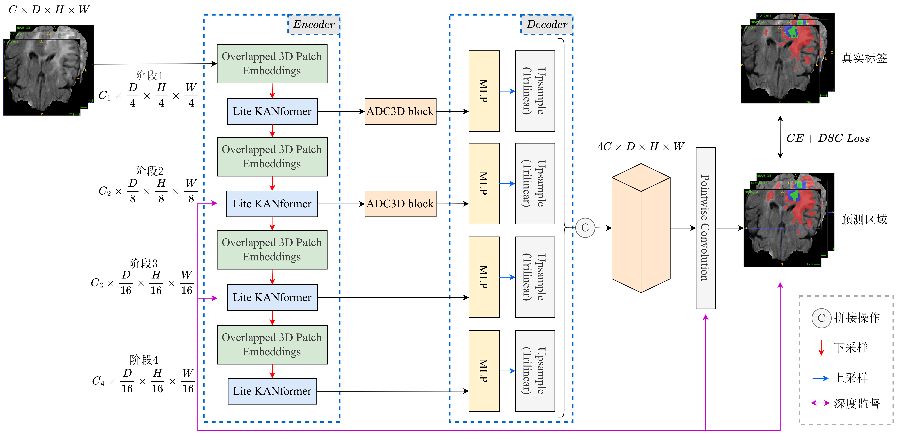
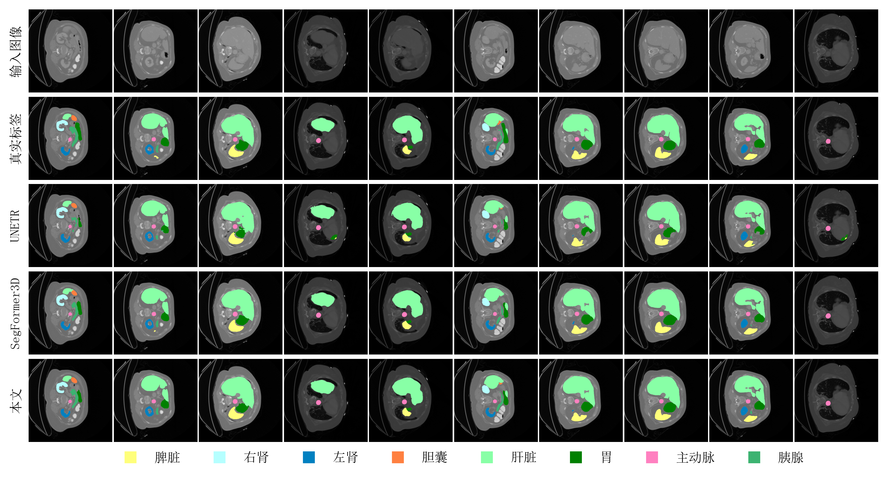
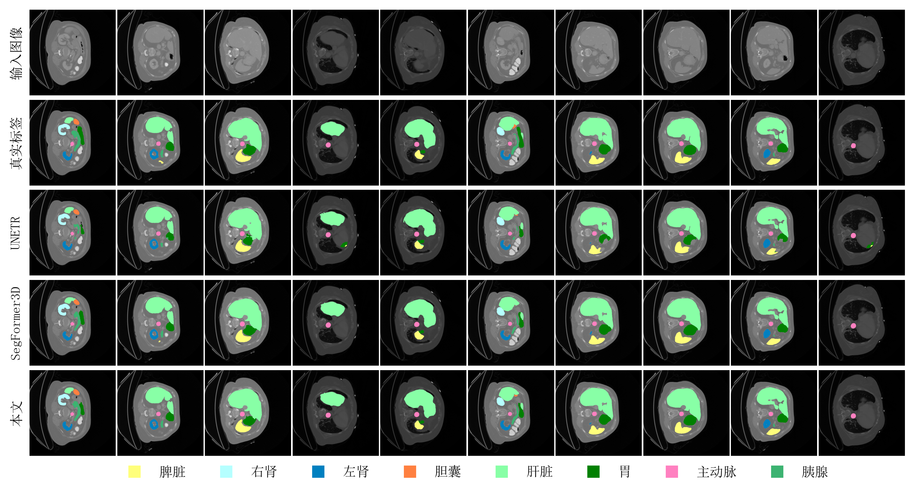

融合高斯映射与动态前馈的轻量医学图像分割 (LiteSegFormer3D)
TL;DR
本文提出了一种轻量化医学图像分割方法 LiteSegFormer3D。通过引入融合高斯映射和动态前馈的 Transformer 块，以及非对称卷积技术，模型在显著降低计算成本的同时（可训练参数量较次优模型缩减 54.55%），在 BraTS 2017、ACDC 和 Synapse 三个公开数据集上实现了显著的性能提升。
研究动机 (Motivation)
背景 (Background)
医学图像分割在疾病诊断、治疗计划和预后评估中发挥着至关重要的作用。
现有方法的局限性 (Gap/Limitations of Existing Work)
-
CNN 的局限性：传统 CNN 受限于感受野，难以捕获图像的全局信息，容易遗漏不同器官间的空间位置关联。
-
Transformer 的短板：基于自注意力的网络虽长于全局依赖建模，但在处理肿瘤边界和纹理等局部细节信息时精度不足。
-
临床落地的瓶颈：现有的 CNN 与 Transformer 融合模型往往计算开销庞大，难以在资源受限的临床实际环境中部署。
本文价值 (Value Proposition)
本文设计的 LiteSegFormer3D 巧妙地平衡了分割精度与计算效率，为临床场景中高精度、低延迟的辅助诊断提供了可行方案。
解决的关键问题与贡献 (Key Problem Solved & Contribution)
解决的关键技术问题
针对现有混合架构计算开销大、局部细节丢失以及对复杂非线性特征空间拟合不足的问题。
核心贡献
-
混合串行编码器架构：融合 CNN 与 Transformer 优势，增强多尺度感知能力并弥补局部信息损失。
-
Lite KANformer 架构：结合了自适应高斯基函数轻量化注意力 (AGBLA) 和自适应归一化前馈网络 (ANSFFN)，强化了非线性空间特征提取。
-
3D 非对称定向卷积 (ADCNet3D)：在维持轻量化的同时，强化边缘刻画能力。
-
卓越的能效比：在三个知名数据集上展现出超越 SOTA 的分割性能，且参数量极低。
方法详述 (Method)
图1：LiteSegFormer3D 总体架构 
1. Lite KANformer 与高斯映射
模型在编码器深层采用 Lite KANformer，利用高斯径向基核函数来强化 QKV 的非线性空间表达。
- 高斯径向基函数公式：
- 确定性基底扩展策略：通过冻结高斯核的中心点和径向尺度因子，将模型可训练参数从 4.51M 降至 1.88M，显著提升了参数效率。
2. 自适应归一化前馈网络 (ANSFFN)
不同于传统 MLP，ANSFFN 采用瓶颈式 3D 卷积操作并引入自适应学习因子（）来调整特征分布 ：
3. 非对称定向卷积 (ADCNet3D)
在浅层跳跃连接处引入 ADCNet3D，通过 3x3x3 标准卷积与 1x3x1、3x1x1 非对称卷积并行，解耦不同空间维度的特征依赖，强化高度和宽度方向的细节提取。
4. 金字塔式深度监督 (PDS)
采用权重遵循 的指数级衰减策略，在三个关键层级实施监督，实现从粗粒度定位到细粒度打磨的渐进式优化。
实验分析 (Experiments)
数据集表现
本文在 BraTS 2017（脑肿瘤）、ACDC（心脏）和 Synapse（腹部器官）三个数据集上进行了验证。
| 数据集 | 指标提升 (vs. SegFormer3D) | 关键结论 |
|---|---|---|
| BraTS 2017 | DSC +4.6%, HD95 -0.38mm | 增强肿瘤区域分割增长达 8.2% |
| ACDC | DSC +1.53% | 解决了心脏 MRI 常见的边界模糊问题 |
| Synapse | DSC +2.76%, HD95 -7.47mm | 胆囊分割 DSC 提升达 13.12% |
 图2：BraTS 2017 数据集分割可视化
图2：BraTS 2017 数据集分割可视化
 图3：ACDC 数据集分割可视化

图4：Synapse 数据集分割可视化
图3：ACDC 数据集分割可视化

图4：Synapse 数据集分割可视化
消融实验 (Ablation Analysis)
-
模块有效性：引入 PDS 使平均 DSC 从 82.1% 跃升至 85.1%；加入 ANSFFN、AGBLA 和 ADCNet3D 后最终达到 86.7%。
-
固定基 vs 可调基：固定高斯基函数中心点不仅减少了 69.3% 的参数量，还因为缓解了过拟合，获得了更高的分割精度。
批判性思考 (Critical Analysis & Personal Thoughts)
优点 (Strengths)
-
极高参数能效：可训练参数量仅为 2.05M，远低于 UNETR (92.49M)。
-
硬件兼容性极佳：实测在老旧显卡 (GTX 1080 Ti) 甚至纯 CPU 环境下也能运行（单张 ACDC 推理约 105s），真正具备了边缘临床设备部署的潜力。
-
泛化能力强：成功实现了从 MRI 模态到 CT 模态的跨任务迁移。
潜在缺点/可疑点 (Weaknesses/Questions)
- 计算开销略增：虽然参数量大幅降低，但由于 KAN 架构引入了非线性映射计算，FLOPs (12.17G) 相比基线 SegFormer3D (10.50G) 略有上升。
启发/可借鉴点 (Insights/Takeaways)
-
固定先验的力量：在医学图像这种小样本场景下，冻结部分非线性算子的参数（如高斯基函数中心点）可以作为一种强有效的正则化手段。
-
非对称设计的灵活性：根据数据特征（如高度/宽度信息密度高于深度方向）设计非对称卷积核，是实现“计算-性能”权衡的优秀思路。